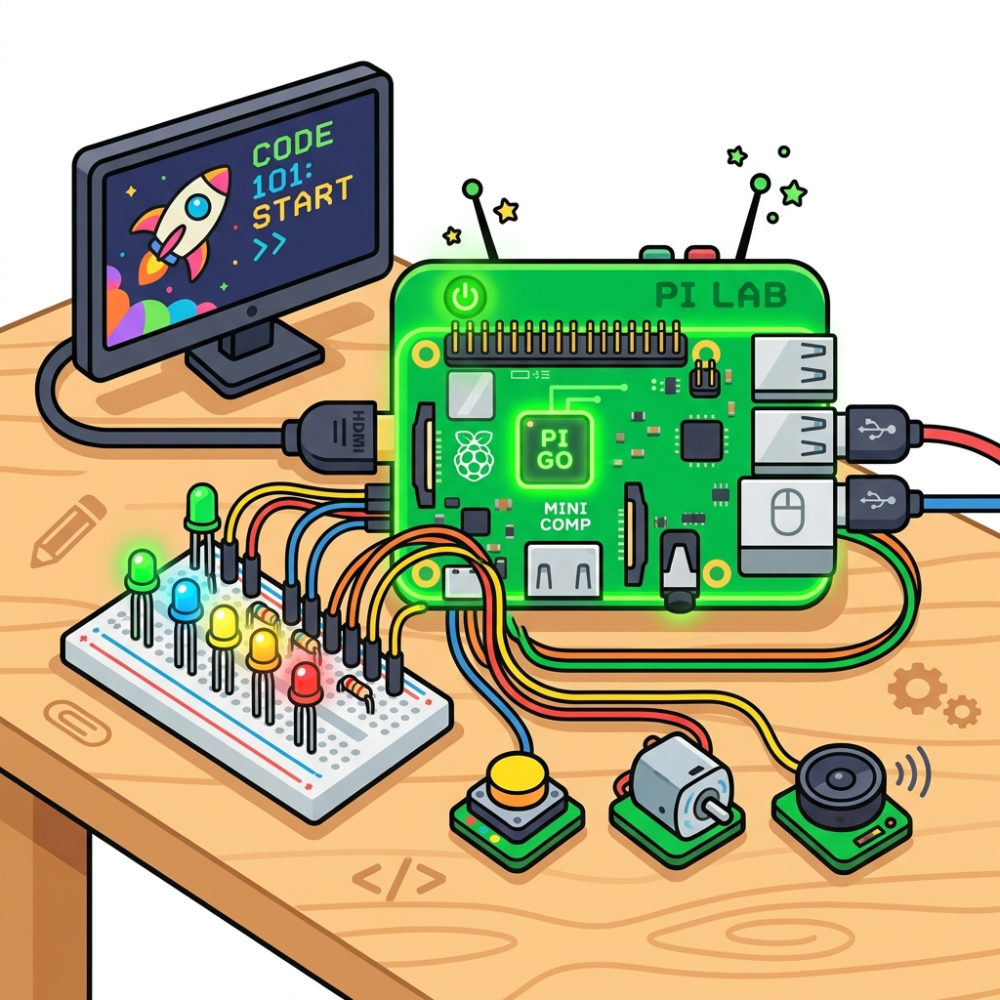

Note: Since we are learning in a web browser, we cannot physically connect wires to your computer! We will use a "Mock" library to simulate what the Raspberry Pi would do.
gpiozero LibraryA Raspberry Pi is a tiny computer with metal pins called GPIO (General Purpose Input/Output). You can attach LED lights to these pins! To control them, we import the LED class from the gpiozero library.
Example A: Importing
from gpiozero import LEDExample B: Connecting to Pin 17
red_light = LED(17)Once you have an LED object, you can use the .on() and .off() methods to control the electricity!
Example A: Turn it on!
red_light.on()Example B: Turn it off!
red_light.off()Computers execute code instantly. If you turn a light ON and OFF immediately, it happens so fast you won't even see it blink! We use time.sleep(1) to tell the computer to pause for 1 second.
Example A: Importing time
import timeExample B: Pausing
time.sleep(2) # Pauses for 2 secondsBy putting .on(), time.sleep(), and .off() inside a for loop, we can make the LED blink multiple times automatically!
Example A: Blinking 3 times
for i in range(3):
led.on()
time.sleep(0.5)
led.off()
time.sleep(0.5)Just like LEDs are Outputs, we can plug Buttons into the Pi as Inputs. We use the Button class from gpiozero.
Example A: Creating a Button
btn = Button(2)Example B: Waiting for press
btn.wait_for_press()